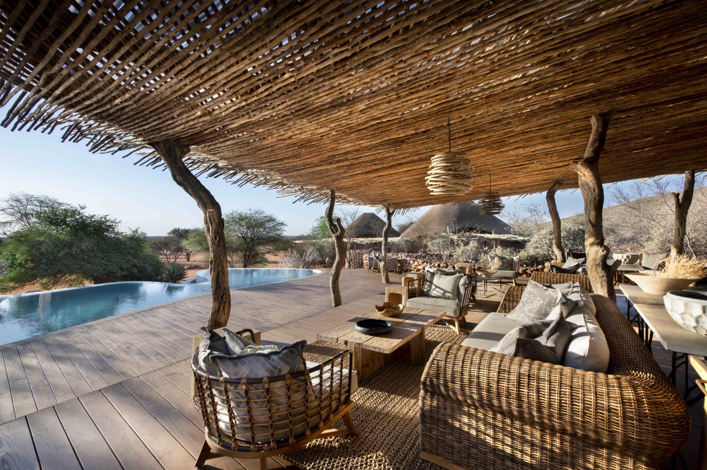

Camp 01
The Motse
At the foot of the Korannaberg · The main camp
The Motse — ‘village’ in Setswana — is a secluded enclave at the foot of the Korannaberg mountains, facing a waterhole that draws the reserve’s wildlife to its lawns. Nine intimate legae, ‘homes’, are built of desert sand, ochre clay and thatch, made entirely from material found on the reserve. The main house holds a communal lounge, study and library, a show kitchen and dining room, a walk-in wine cellar and an award-winning spa and gym, beside a heated pool, a fire-pit boma and Boscia restaurant.
Suites6 legae (1–2 guests) · 3 family legae (4 guests)
Maximum guests24
SettingWaterhole & Korannaberg views
FamiliesChildren of all ages welcome
From ZAR 46,400 per adult, per night sharing